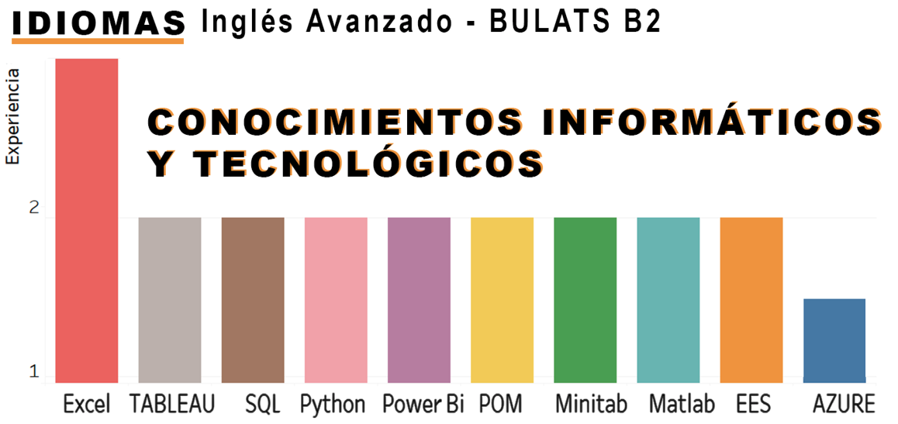
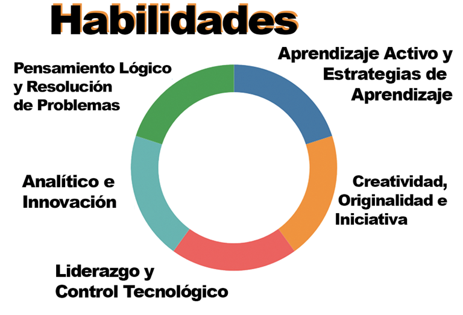

Áreas de Interés
- Analísta de Datos Para toma de Decisiones
- Inteligencia de Negocios
- Innovacion y Desarrollo para Procesos Sustentables
Formación Académica
- Ingeniería en Inovación y Desarrollo | Instituto Tecnológico y de Estudios Superiores de Monterrey (ITESM)
Consentración Profesional
- Energías Alternativas
- Analítica Avanzada de Datos
- Certificaciones
- Sistemas Termosolares y Fotovoltaicos
- Machine Learning & Data Science
- Microsoft Azure Fundamentals
- Analíticas de Datos con Pandas
Experiencia Profesional
Instituto Tecnológico de Estudios Superiores de Monterrey | Agosto 2020 - Junio 2022
Ejecturar y planificar desde actividades, capacitaciones y espacios para la implementación del Metaverso Universitario.
SAP Technical Consulting Intership | Junio - Agosto 2022
Por medio de SAP Analytics Cloud, realizar un proceso de inteligencia de negocios para dar a los clientes soluciones en base a datos proporcionados.
Verano SAP | Julio - Agosto 2022
Desarrollar soluciones RPA en el que permitan limpiar datos y automatizar procesos, primeras interacciones con empresas.
Actividades Cocurriculares
Presidencia Asociación Estudiantil de Ciudad de México | Enero 2022 - Enero 2023
Unificar y gestionar a la comunidad estudiantil de CDMX en campus Monterrey por medio de proyectos de impacto social y emprendedor, impactando a comunidades sociales y estudiantiles.
Director de Comunicación y Mercadotecnia Future Awaits | Mayo 2020 - Junio 2021
Estructurar y consolidar el plan estratégico de mercadotecnia para el congreso dedicado a estudiantes de ingenierías Future Awaits para el alcance al público.
Director de Administración y Finanzas AECDMX | Enero 2021 - Enero 2022
presupuestar e incrementar el capital de la mesa estudiantil por medio de proyectos de emprendimiento o por medio de patrocineos.
 